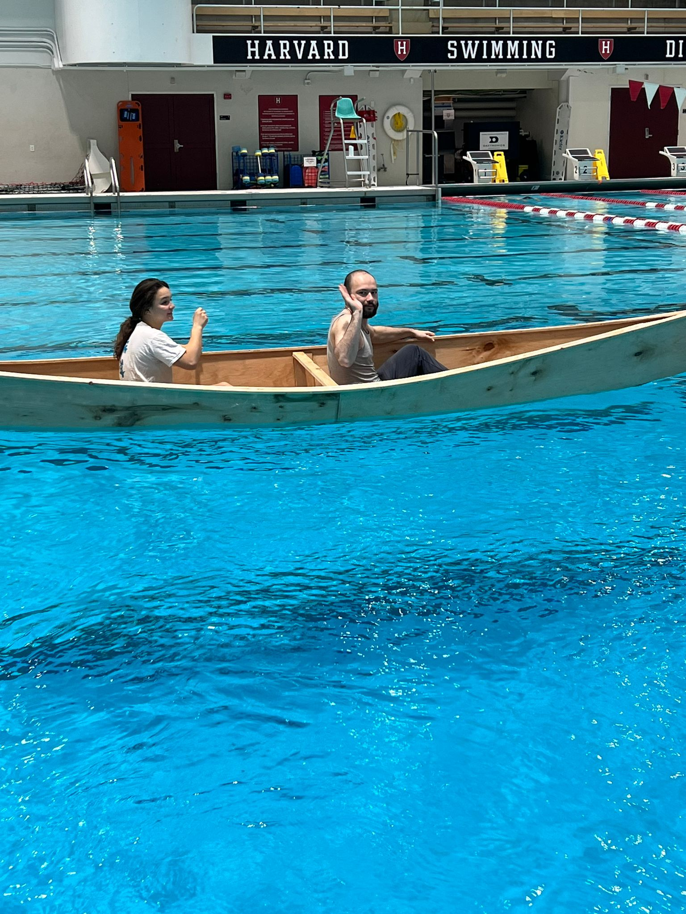

### Week 10: Testing at Blodgett Pool
<br><br>
Brought the boats over to Blodgett and tested them, seeing if there were any leakages, or seeing if there was anything to modify, specifically the keel and whether the boat was turning too easily or not, as well as the seats and the most ideal location to place them.